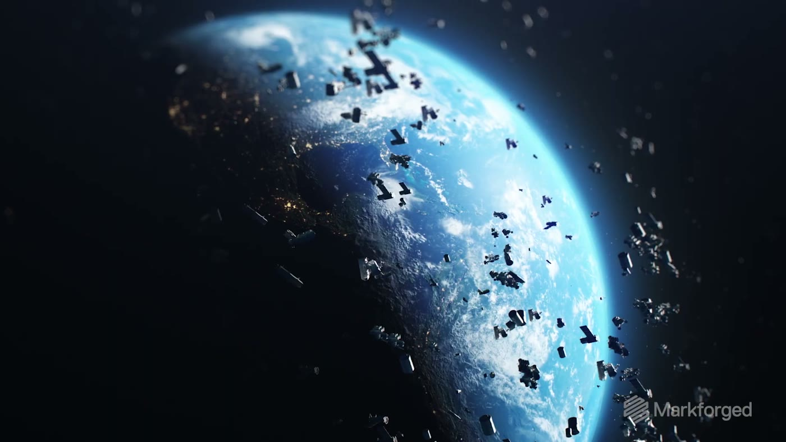
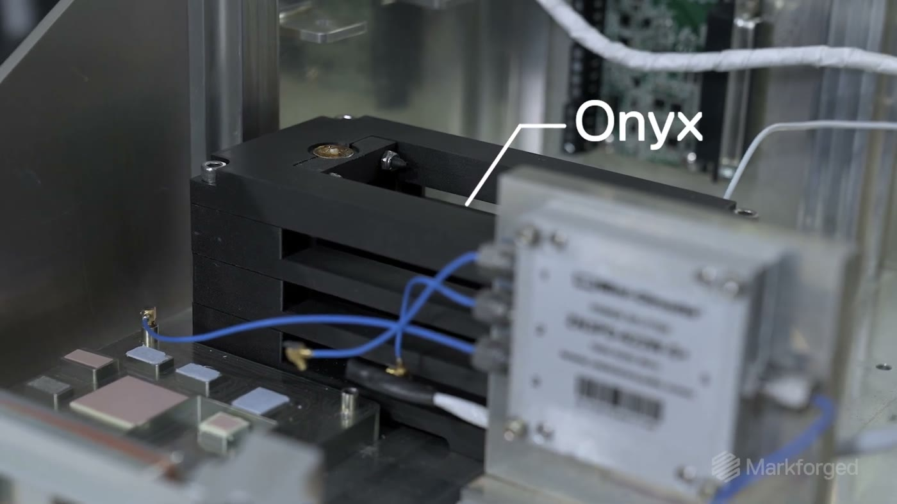
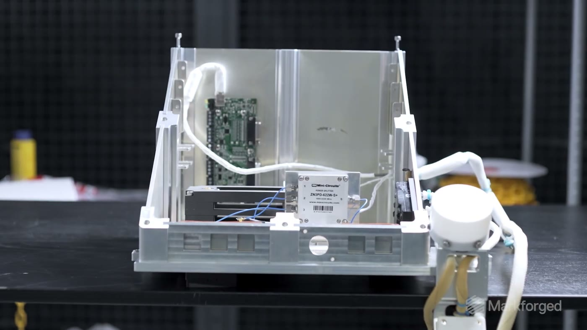
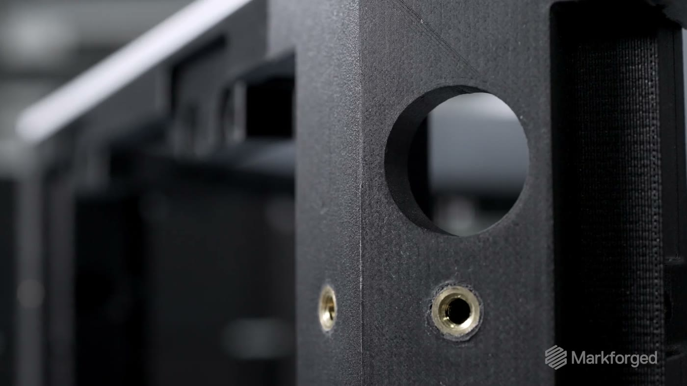

News & Insights

美國衛星製造商 Sidus Space 給了一個具體答案：整顆衛星的結構用連續碳纖維與 Onyx 列印，而且不是實驗品 —— LizzieSat-1、-2、-3 已經在低軌道上運行。
「老實說，如果沒有 Markforged，我不認為我們會在做這件事。」
Carol Craig ｜ Sidus Space 創辦人暨執行長
為什麼衛星結構特別難
整顆衛星不能超過 100 公斤，而結構每減一公克，酬載就多一公克
衛星的重量上限是硬的。電池、電腦與各種必要元件本來就吃掉大部分配額，留給結構的空間很窄。Sidus Space 的設計工程師在片中說明，他們的作法不只是把零件做輕，而是連結構本身的設計一起改 —— 減下來的每一分重量，直接換成可以多裝的酬載。
而發射與在軌環境並不寬容：發射瞬間要承受 5G 負載，入軌後要面對太陽輻射，以及向陽面與背陽面之間的劇烈溫差。

先有證據，才有衛星
材料在國際太空站外部掛了一年，取回後與剛下機台的件看不出差別
LizzieSat 之前，Sidus Space 先做了一個飛行測試平台：用 Onyx 快速打樣出樣品固定架，隨材料曝露實驗送上國際太空站，再取回地面檢視。
原訂曝露期約 15 週，實際在外面待了整整一年。同一批的白色對照件被太陽曬到明顯劣化，Onyx 件則沒有出現任何劣化。
Sidus Space 首席設計審查 Tony Boschi 在片中形容取回的狀態：「剛從機台下來的件，跟在太空待了一年的件，沒有差別。」
這份結果才是 LizzieSat 把 Markforged 當成結構基礎的理由 —— 順序是先有飛行驗證，才有衛星。


為什麼是列印，不是機加工
有些幾何機加工做不出來，而設計一改，隔天就有新零件
為了拿掉螺絲的重量，Sidus Space 把扣合特徵直接設計進結構件裡：零件落進槽位後自行鎖定，鎖上之後就再也拉不開。片中說明，這個特徵的一端可以機加工，另一端則完全做不出來，而列印件每一次都能穩定達到需要的公差。
速度是第二個理由。用鋁的話，一個設計變更要走完變更、製造與組裝；改用列印，變更當天重印，隔天就有全新零件。
材料可追溯性
航太與國防採購要的不只是強度，還要能追回到材料是怎麼做出來的
Sidus Space 目前以 Onyx FR 阻燃材料列印，並採用 Onyx FR-A。FR-A 的 A 代表材料具備完整可追溯性 —— 片中直言，這是許多公司的硬性要求。萬一出現分析預期之外的裂紋或剪切，可以一路追回材料的製造過程、找出問題並修正。
值得一併留意的是，Onyx FR-A 與 Carbon Fiber FR-A 已在 Markforged X7 上通過 NCAMP 認證，對走航太資格認證流程的製造商而言，這條路徑是現成的。
資料來源
- Markforged 官方影片《We 3D Printed a Satellite with Sidus Space.》（2023 年發布）。本文引用的兩處直接引言均逐字取自該片。
- 在軌狀態與後續發射時程取自 Sidus Space 投資人公告（2026 年 9 月查證）：LizzieSat-1 於 2024 年 3 月、LizzieSat-2 於 2024 年 12 月、LizzieSat-3 於 2025 年 3 月 14 日隨 SpaceX Transporter-13 自 Vandenberg 進入低軌；下一顆排定 SpaceX Transporter-18，最快 2026 年 10 月。
- 原片中提到的發射時程為發布當時資訊，已非現況；本文一律以上述在軌狀態為準。
- Onyx FR-A 與 Carbon Fiber FR-A 的 NCAMP 認證狀態取自 Markforged 材料資料。
- 文中圖片均為 Markforged 官方影片畫格。